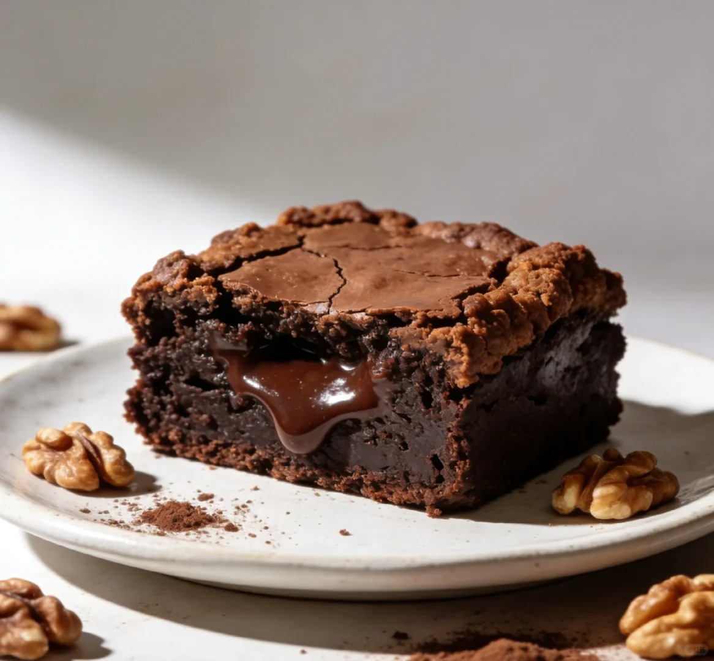
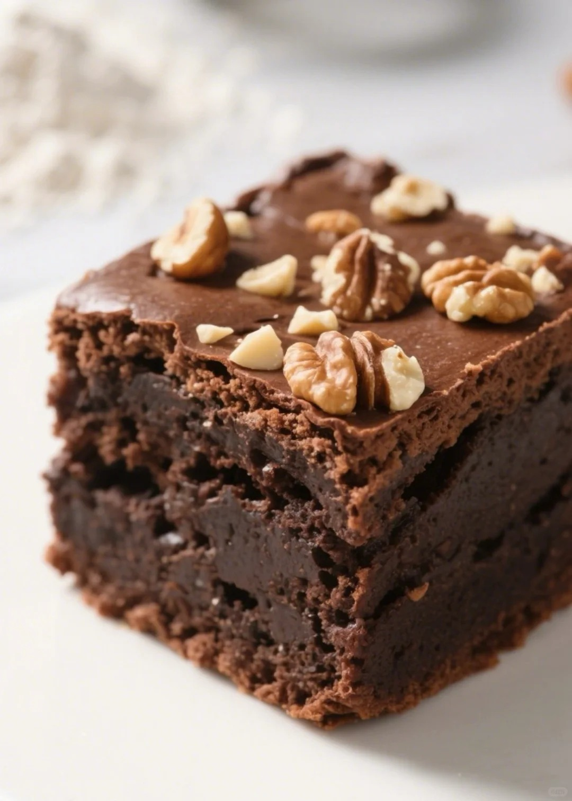

布朗尼



布朗尼（Brownie）是一种以巧克力为主要原料的经典美式甜点。因其主要原料为黑巧克力，烘焙后呈现出咖啡色（brown），故而得名 “Brownie”。布朗尼的质地介于蛋糕与饼干之间，有多种口感类型。软糖质地（Fudgy）的布朗尼最为常见，其表面有一层油亮亮的脆皮，内部软糯有嚼劲，巧克力味浓郁；蛋糕质地（Cakey）的布朗尼则相对松软，类似浓郁版的巧克力蛋糕；还有介于两者之间的有嚼劲质地（Chewy），松软且中心有嚼劲。制作方法先将黄油室温软化，黑巧克力隔温水化开，核桃仁烤香切碎。然后将黄油搅拌均匀，加入化开的黑巧克力、细砂糖、全蛋液依次搅拌均匀，再加入过筛的低筋面粉拌匀，最后加入核桃碎，将面糊倒入模具，放入预热好的烤箱烘烤即可。 关于布朗尼的诞生有多种传说。一种说法是，有厨师不小心将融化的巧克力添加到制作饼干的面团中，从而意外创造了布朗尼；还有传说称，1893 年，芝加哥帕尔马酒店的主厨应酒店老板娘柏莎・帕尔马的要求，为参加芝加哥世界博览会的女士们制作了一种便于携带的小点心，最终诞生了包含核桃以及泛杏果酱的布朗尼。